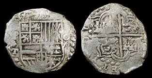

When we think of how far the human civilization has progressed since the prehistoric era, the yardsticks that come up are rarely financial. However, it would not be wrong to say that finance is in fact the foundation of human progress and financial events the essential backdrop behind all history. One of the first events was the development of concept of money. Today, it is difficult to step out without carrying your wallet since money is used everywhere. If it is the new Google Pixel you want to buy or the Master's degree you are planning to take abroad, it all requires money.
But what exactly is money? Is it a mountain of silver, as early Spanish explorers thought? Or is it simply plain paper notes? How did we come to live in a world where most money is invisible, little numbers on the computer screen?
CASHLESS TO DEVELOPING THE CONCEPT OF MONEY
Five hundred years ago, the most sophisticated society of South America, the Inca empire was cashless. The Incas appreciated the aesthetic properties of rare metals.There was no trading class and the accumulation of wealth by an individual through commerce was prohibited. The economy of the Inca empire flourished due to their innovative tax system: instead of paying taxes, every Incan was required to provide labor to the state. The economy of the Inca empire depended strongly on innovative central planning and economic labour.
In the year 1502, a Spanish explorer, Francisco Pizarro decided to cross the Atlantic to seek his fortunes. The travellers had to encounter harsh conditions on their way: difficult terrain, scarce food and the indigenous people hostile. Three years after they had set sail, a victory over Athahuallpa, one of the two feuding sons of the recently deceased Incan emperor Huayana Capac got the Spanish closer to what they wanted. Athahuallpa was publicly executed and the Inca empire torn apart. The perseverance of the Spaniards was rewarded, when they discovered the “The Money Mountain” and the unsymmetrical Cerro Rico which literally translates to the rich hill- collectively, the Spanish were able to take home 13,420 pounds of 22 carat gold and 26,000 pounds of pure silver.Pizarro’s conquest it seemed, had made the the Spanish crown unimaginably rich. Due to an inflow of a large amount of wealth, the Spanish piece of eight became the world's first global currency.

The Spanish “piece of eight” , minted from silver, became the world’s first global currency.
WHAT IS MONEY?
Thus,the mighty Inca empire was brought down by explorers, who were travelling around the world looking for rare metals, which was in those days the unit of transaction in the European region. The Incas were unable to comprehend the reason as to why the the rare metals were so important to the Spaniards. For Pizzaro and his men, silver was much more that just a shiny decorative metal. It could be made into money: a unit of account,a store of value-portable value.Conventionally, it can be said that money is a medium of exchange, which removes the inefficiencies of the barter system. It allows economic transactions to take place over longs periods of time and geographical distances. Optimally, money has to be affordable, durable, reliable and portable. Because they fulfilled most of these criteria, gold and silver were regarded as the ideal monetary raw material.
PAPER MONEY: HOW?
Paper bills were first used by the Chinese, who started carrying folding money during the Tang Dynasty (A.D. 618-907) — mostly in the form of privately issued bills of credit or exchange notes — and used it for more than 500 years before the practice began to catch on in Europe in the 17th century. While it took another century or two for paper money to spread to the rest of the world, China was already going through a fairly advanced financial crisis: the production of paper notes had grown until their value plummeted, prompting inflation to soar. As a result, China eliminated paper money entirely in 1455 and wouldn't adopt it again for several hundred years.
THE UNDERLYING PRINCIPLE OF TRUST?
Historically, most currencies were based on physical commodities such as gold or silver, Economic value and rare metals were considered synonymous. However, as the Spanish learnt, money is not metal; it is the trust inscribed and it doesn’t matter where it is inscribed - on silver, on clay or on paper. Modern day paper currencies are also based on trust. A simple example of the same is the Indian ten rupee note which reads , “I promise to pay the bearer the sum of ten rupees”. Bank notes are simply pieces of paper, with no real economic worth and are used solely as means of payment, in other words, fiat currencies. They are promises to pay and work as an effective currency because people believe in them.
WHY CAN’T WE JUST PRINT MORE MONEY?
The influx of silver and gold could not secure the British crown for the Spanish and there was soon a decline in the Spanish economy. The reason? The Spanish had dug up so much silver to sponsor their conquests, that the metal itself lost some of its value. It was a simple economics principle that the Spaniards had failed to grasp : the value of the metal was not absolute. Money is only worth what people are ready to pay for it. Breaking it down,the goods that actually carry economic value hadn’t changed in quantity but the amount of money, that is the token used to exchange this value had increased in number and hence its value decreased. An increase in supply merely enriches the government that monopolizes the production of money, and does not make the society richer. Other things remaining constant, increasing the money supply(liquidity) in the market will simply make prices higher.
DIGITAL MONEY
The fast paced world no longer depends on fat wallets for its transactions and hence has shifted to a more digitalised approach that enables larger volumes of transactions to go through in the blink of an eye. A more digitalised approach isn’t just more efficient but also safer and easier to track which helps governments keep illegal activity under control. Since the advent of digital money, the world has been exposed to multiple avenues for the facilitation of the same which includes paypal, bitcoins etc.
Bitcoin is decentralized digital money, introduced in 2009. It offers lower transaction fees than traditional online payment mechanisms. There are no physical Bitcoins, only an online ledger where all the transactions are recorded.
It is interesting to note that since March 2014, all virtual currencies, including Bitcoin, are taxed as property rather than currency.
Money doesn’t make the world go round but it does make staggering quantities of people, goods and services go around the world. The concept of money is perhaps the most fascinating and carefully drafted one by civilisation as it continues to evolve while being subjected to constant improvements.
Now, that you’ve understood the way money came into being you probably want to understand its full implications and the power it carries. Well sit tight as the next article in this series will take you into the powerful world of borrowing and lending where fortunes have been made and nations withered all at the hands of money.
-Written byShubhra Agrawal